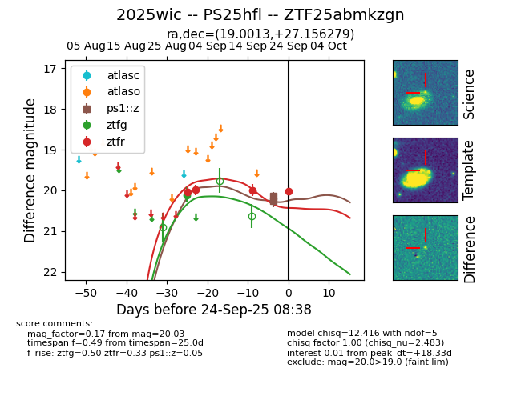
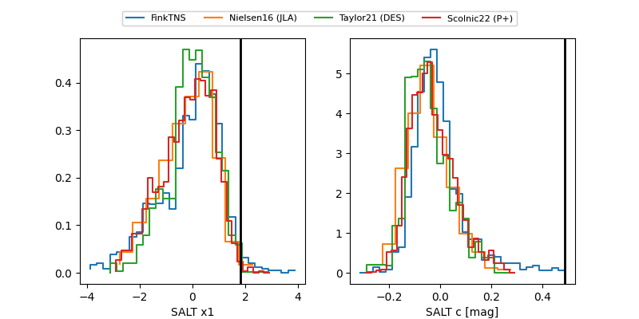

FINK: ZTF25abmkzgn
Lasair: ZTF25abmkzgn
ALeRCE: ZTF25abmkzgn
TNS: 2025wic
YSE: 2025wic
ZTF25abmkzgn (ztf,fink)
2025wic (tns,yse)
PS25hfl (panstarrs)
equatorial (ra, dec) = (19.0013,+27.15628)
galactic (l, b) = (129.6382,-35.39536)


last ps1::z=20.25, ztfg=20.11, ztfr=20.03
2 ps1::z, 1 ztfg, 4 ztfr detections